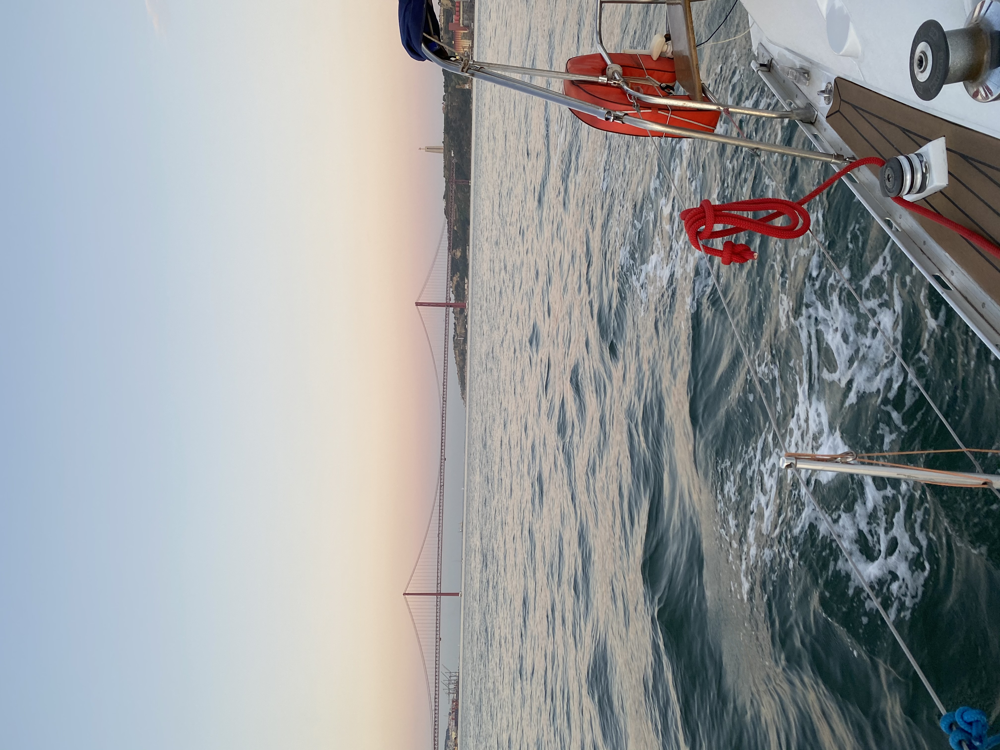
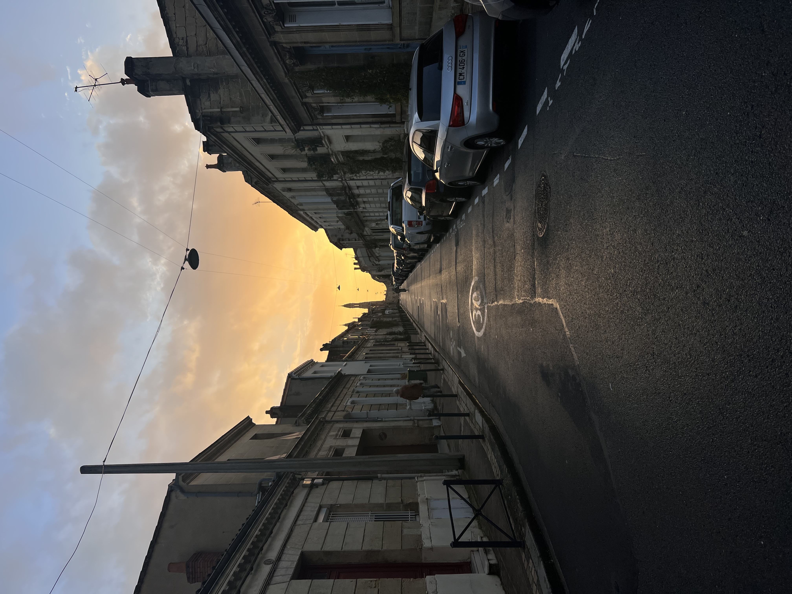
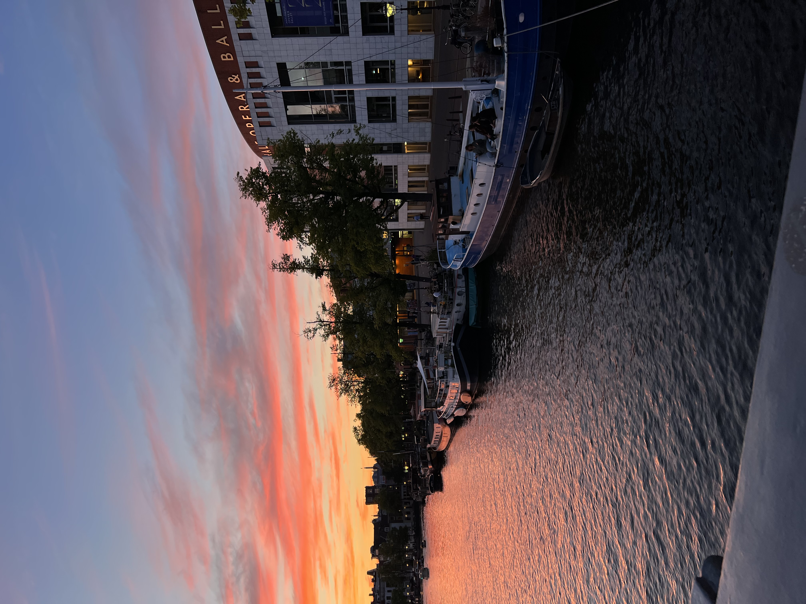
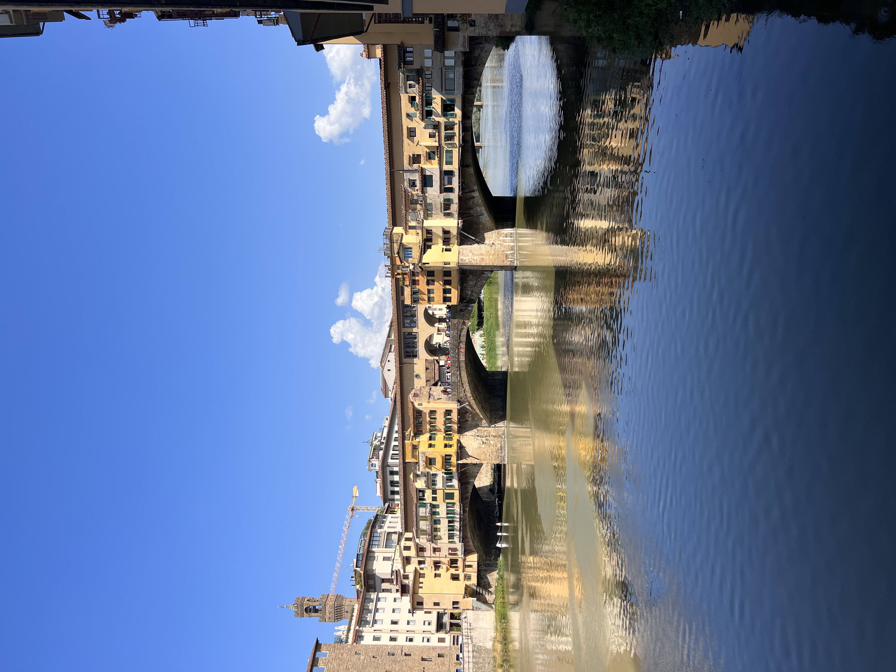

... your key to unforgettable adventures worldwide. Whether you're a seasoned traveler or a first-timer, explore diverse cultures, scenic landscapes, and vibrant cities with our curated insights and recommendations. From local cuisines to unique festivals, we empower you to tailor your journey, making every click a step towards extraordinary experiences.

Lisbon
Lisbon, Portugal's coastal capital, captivates with its sun-kissed charm and eclectic vibes. Perched on hills overlooking the Tagus River, Lisbon boasts narrow cobblestone streets, pastel-colored buildings, and historic landmarks like São Jorge Castle. Immerse yourself in Fado music in Alfama, savor pastries in Belém, and enjoy panoramic views from the historic Tram 28. Lisbon harmonizes tradition and modernity along its scenic shores.
London
London, a global icon, seamlessly blends history with modernity. Explore regal landmarks, world-class museums, and vibrant neighborhoods. From Buckingham Palace to Camden Market, the city offers diverse experiences. London invites you to stroll along the Thames, immerse yourself in its rich history, and savor cosmopolitan cuisine, creating a dynamic urban tapestry that bridges tradition and contemporary allure.

Bordeaux
Nestled in French wine country, Bordeaux seamlessly combines historic charm with a modern vibrancy. Explore the UNESCO-listed old town, stroll along the Garonne River, and indulge in world-class wines at charming vineyards. Bordeaux captivates with its blend of culture, culinary delights, and celebrated wines.

Amsterdam
Amsterdam, a city of canals and cosmopolitan flair, seamlessly blends history and modernity. Cruise through picturesque waterways, visit the Anne Frank House, and embrace the lively atmosphere of Dam Square. With world-class museums, vibrant neighborhoods, and a cycling culture, Amsterdam combines old-world charm with a progressive spirit.

Florence
Florence, the cradle of the Renaissance, invites you into a world of artistic splendor. Home to masterpieces by Michelangelo and Leonardo da Vinci, the city is a living museum. Wander through enchanting streets, visit the iconic Uffizi Gallery, and marvel at the breathtaking architecture of the Duomo. Florence is a treasure trove of art, history, and romance.